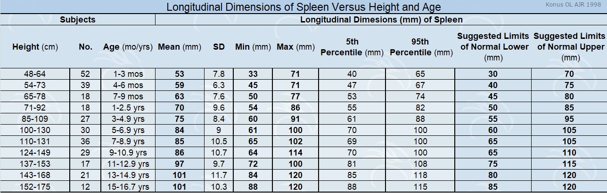

Liver and Spleen Length Reference Values
Select organ, reference method, and a range to view the normal limits.
Choose Organ:
Spleen
Liver
Choose Reference Type:
Age (yrs/mos)
Height (cm)
Select Height Range (cm):
Select Age Range:
Measurement Range:
5th Percentile (min):
95th Percentile (max):
Suggested Normal Limits Range:
Click to view reference table:

×